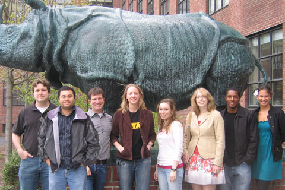

News Archives : 2009 : Congratulations 2009 MCB Graduate Student Fellowship Recipients!
by Mike Lawrence
May 4, 2009
Pictured Left to Right: Chris McCartney-Melstad (Graduate Programs Office), Dario Cabrera (G3, Murray Lab), Michael Lawrence (Graduate Programs Office), Katherine Rogers (G1, Schier Lab), Valerie Pivorunas (G2, Burton Lab), Mary Wahl (G1, Murray Lab), Scott Chilton (G1, Burton Lab), Kiana Frank (G1, Girguis Lab-OEB) |
We are pleased to announce that the following MCB graduate students have been selected for a National Science Foundation Graduate Research Fellowship beginning in 2009. The NSF Fellowship supports outstanding graduate students nationwide. The NSF expects that recipients will contribute significantly to research, teaching, and innovations in science.
Congratulations to G1s Kiana Frank, Katherine Rogers and Mary Wahl and to G2 Valerie Pivorunas!
Kiana Frank (G1, Girguis Lab-OEB) … will be studying the effect of nitrogen on the microbial diversity of Hawaiian watersheds.
Katherine Rogers (G1, Schier Lab) … will be quantitatively analyzing transcriptional responses to morphogen signaling during zebrafish embryogenesis.
Mary Wahl (G1, Murray Lab) … will be developing a sexual selection model in yeast to examine the effects of sex-linked mutator alleles on rate of evolution.
Valerie Pivorunas (G2, Burton Lab) … is investigating the role of a tail-anchored specificity factor in ubiquitination
Additionally, G1 Scott Chilton (Burton Lab) has been awarded a Gilliam Fellowship from the Howard Hughes Medical Institute. The prestigious award funds approximately 5-10 exceptional students nationwide, from groups traditionally underrepresented in the sciences. The Gilliam fellows program, now in its 5th year, aims to enrich science research and increase the diversity of college and university faculty members by supporting the education of top student scientists who will themselves either become professors or are committed to creating a more diverse academic community.
Finally, G3 Dario Cabrera (Murray Lab) has been awarded an NIH National Research Service Award from the National Cancer Institute. Dario is currently doing his dissertation research in the Murray Lab, studying genetic instability by selecting for mutations that confer drug resistance in budding yeast.